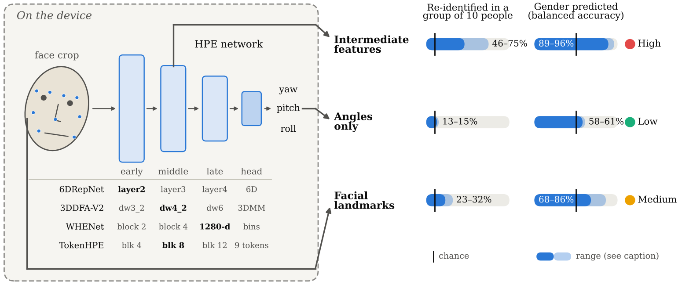

Tunahan Parlayıcı, Erchan Aptoula, Yücel Saygın · Sabancı University
Head pose estimation is often called privacy-friendly because it outputs three angles. We audit four estimators and find that everything computed before those angles identifies people and predicts gender, age group and perceived race about as well as a generic image network.
Rank-1 identification among 158 people as a multiple of chance, at each point of the pipeline (training-free matcher, LFW).
Scenario A: the image never leaves the device. What leaves is an artifact of the pipeline: an intermediate feature vector (split inference, a shared feature store), facial landmarks, 3DMM coefficients or the angles.
Scenario B: the image is shared, protected first. The user applies TIP-IM, AMT-GAN, an ensemble adversarial attack, blurring or pixelation before sending the image to a pose service.
In both, the adversary holds a few labeled photos of each person in a known group and runs the same open-source model. Gallery and probe are always different photographs. Attackers range from a training-free matcher to a similarity learned on 452 other people and a learner fit on the gallery.
Share of probes re-identified, mean of 500 random groups. The black tick is chance.
Balanced accuracy of a linear classifier trained on other images. Gender on CelebA (person-disjoint), perceived race and age group on FairFace. Labels are annotators' perceived categories, used only to measure aggregate risk.
| Representation | Gender (CelebA) | Gender (FairFace) | Race, 7 groups | Age, 9 groups |
|---|
Horizontal: share of ArcFace R50 accuracy that survives the protection. Vertical: pose utility, the Privacy Robustness Index (PRI; a 3° error halves it), averaged over the four estimators.
TIP-IM and AMT-GAN keep pose (PRI about 0.8) but leave 78–88% of ArcFace accuracy. They fool FaceNet on 72–80% of genuine pairs at a false-accept rate of 10−3, ArcFace on only 16–25%.
An alignment-aware ensemble attack (ε = 16/255) drives ArcFace R50 to 6% and the unseen R100 to 5%, yet HPE head inputs keep 34–48% of their identity signal, and so does ImageNet ResNet-50 (46%).
Blurring and pixelation remove identity only where PRI falls to 0.05 or below.
A linear projection that removes 256 identity directions either breaks pose (about 6.5°) or, when constrained to keep the angles, leaves a retrained attacker at 23–68 times chance.
Bold marks the layer that identifies people best in each model. Late is the input of the pose head.

Process images on the device; transmit and store the three angles and nothing computed before them.
Intermediate features, landmarks and 3DMM shape coefficients identify people and reveal gender, age group and perceived race.
Report identity retention against modern recognizers the method did not target, together with the pose error.
@article{parlayici2026hpepp,
title = {What Do Head Pose Estimators Reveal? An Audit of Identity
and Soft-Biometric Leakage in Head Pose Pipelines},
author = {Parlay{\i}c{\i}, Tunahan and Aptoula, Erchan and Sayg{\i}n, Y{\"u}cel},
note = {Under review},
year = {2026}
}